Two paper instruments that fold flat, pop up, and tell true civil (clock) time on a windowsill.
A sundial is usually a heavy, permanent thing — stone, bronze, bolted to a plinth. It need not be. Given an accurate line drawing and a pair of scissors, a horizontal dial can be printed on a single sheet, folded into a greeting card, and dropped in an envelope. This is a note on two such designs: the original single-dial pop-up, and a new dual-dial card that splits the year in half to read the sun more precisely.
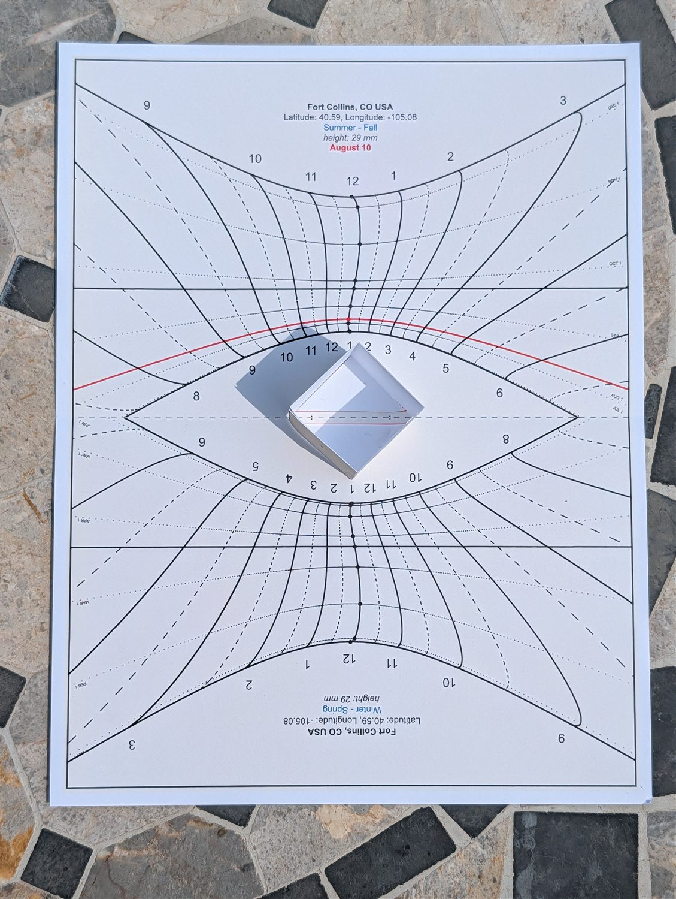
Precision Sundial is a browser-based design studio for printable sundials. You give it a place — click a map, or type a city and it resolves the coordinates and time zone offline — and it computes a dial for that exact latitude and longitude: hour lines, seasonal date lines, a sized gnomon, decorative text, and a border. You then export to PNG, SVG, or PDF and print at true physical scale.
What sets it apart is that it does the astronomy honestly rather than approximately:
Beyond the flat dials, it can unfold a gnomon from the same sheet of paper — no separate rod, no glue-on hardware. That single capability is what makes a mailable sundial possible, and it is the subject of the rest of this note.
You need no astronomy to drive it. The whole instrument is exposed as plain controls — where you are, which lines you want, how each is drawn — and the dial redraws the instant you touch one. Three parts of that panel do most of the work.
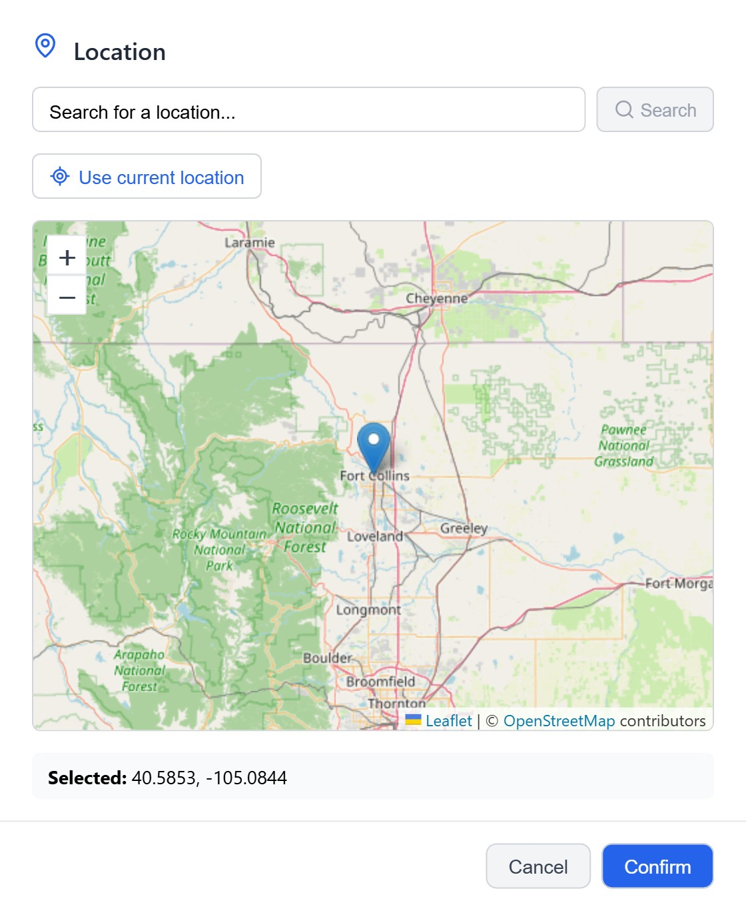
Location, from a map. The one input the mathematics truly needs is where you stand. Drop a pin, type a city, or tap Use current location; the app fills in your coordinates and picks the correct time-zone meridian for the longitude correction.
Every line, on your terms. Both families of curves are yours to shape. Switch hour intervals on or off — hours, halves, quarters, down to two-minute lines — set the daily range, and toggle equation-of-time correction, atmospheric refraction, and automatic daylight time. The date lines are just as open: solstices, equinoxes, the first of each month, or a single day such as today, each in a style you choose.
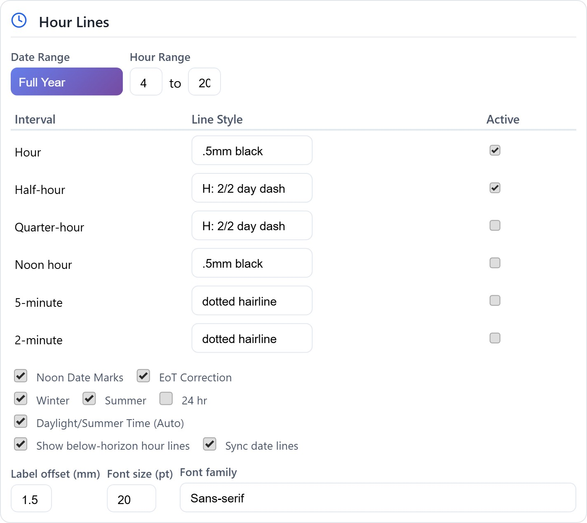
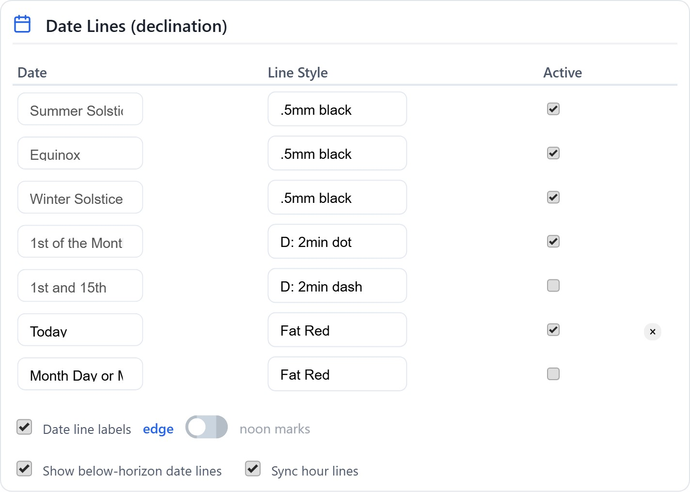
Lines that carry a scale. Styles go past solid and dashed. The calculated styles turn a curve into a row of ticks that mean something: a two-minute dot lays a mark every two minutes of real time along a date line; a day-count dash steps along an hour line by the calendar. A single printed curve then carries its own fine scale to interpolate against — D styles for date lines, H for hour lines.
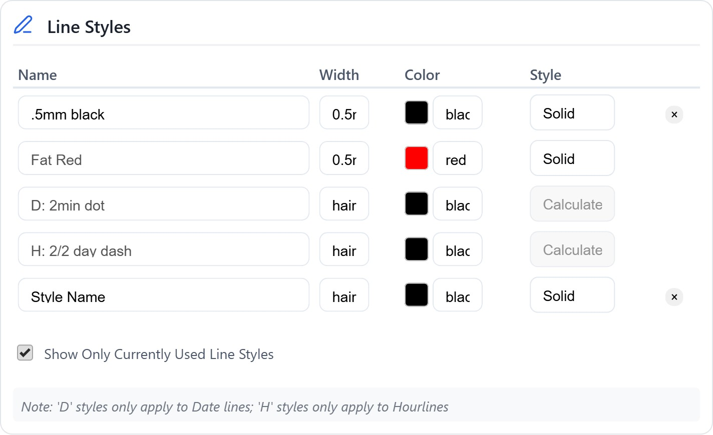
A horizontal dial has two families of curves. The hour lines radiate from the gnomon's foot; the sun's shadow crosses them to give the time. The date lines run the other way — each marks where the shadow tip lands on a given date, so the shadow's position along its hour line reveals the season. Noon, tracked across a whole year, traces the familiar figure-eight of the analemma, a direct consequence of the equation of time.
That figure-eight is also the problem. On a full-year dial every date line has a twin: the sun stands at the same declination on a spring date and again on a matching autumn date, so the lines double back on themselves and bunch together near the solstices. The drawing gets crowded exactly where you most want to read it.
Split the year in two, and each half-year dial carries only one pass of the sun — unambiguous date lines, wider spacing, and far easier interpolation between the hours.
This is the idea both pop-ups exploit, and the one the dual-dial card takes all the way.
The first design is a single horizontal dial with a triangular gnomon that folds up out of the page. The sheet can be left flat, or scored down the middle and stood up as a greeting card. The gnomon is a right triangle you cut free, valley-fold along its centre, and glue down — corner A→A corner B→B — so its vertex becomes the shadow-casting nodus.
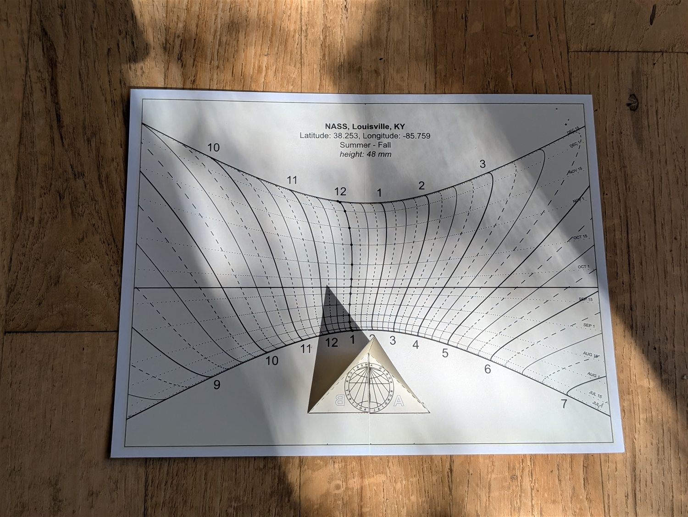
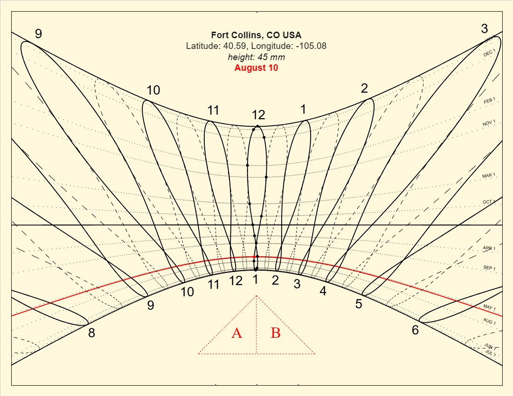
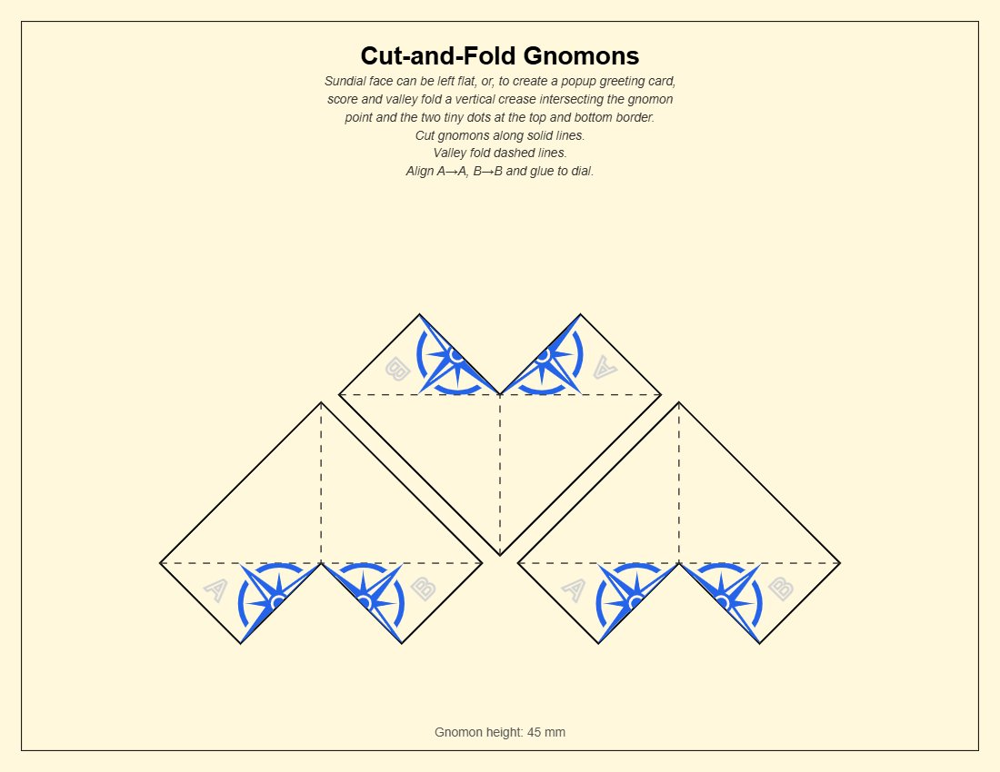
It works, and it mails beautifully. But a single dial inherits the full-year crowding of §3 — and if you want precision across the whole year, one dial has to compromise. That is what the second design set out to fix.
The dual-dial card carries two half-year dials on one landscape sheet, meeting at a vertical crease. The Summer–Fall dial fills the left half; the Winter–Spring dial fills the right. Each is a genuine, undistorted horizontal dial computed for your location, then rotated ninety degrees so its noon points outward and it fills its half of the card. Because each covers only half the year, both enjoy the wider spacing and clean date lines that a single dial cannot.
You use whichever dial is in season, turning the card so that half reads upright. Together the pair covers all twelve months — the convenience of a year-round dial, without a year's worth of crowding on either face.
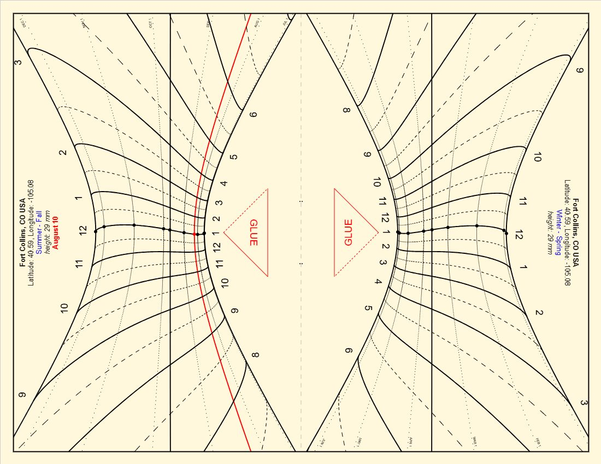
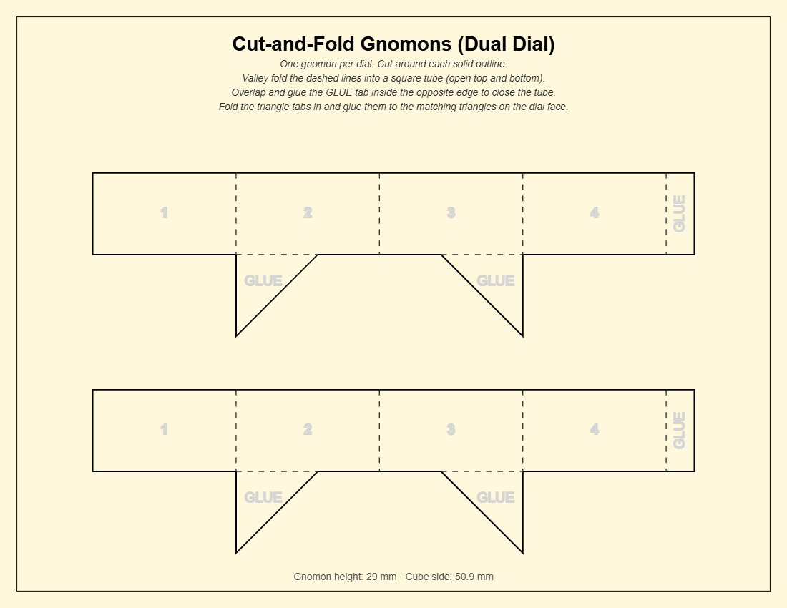
The gnomon is the clever part. The two dials place their gnomon feet directly across the crease from one another, a fixed distance apart. A single square paper tube stands there on its diagonal: two opposite vertical edges land exactly on the two feet, so one tube serves both dials at once — the near edge casts for whichever half is in use. The tube's side is set so its base diagonal equals that foot-to-foot distance:
side = (foot separation) ÷ √2
which keeps the printed gnomon height in exact agreement with the dial it drives. Fold-in triangular tabs glue the tube's own shadow-triangles to matching triangles on the dial face, locking it upright. Stand the card up like a greeting card and the tube rises at the fold; lay it flat and it becomes a small permanent horizontal dial for a shelf or sill.
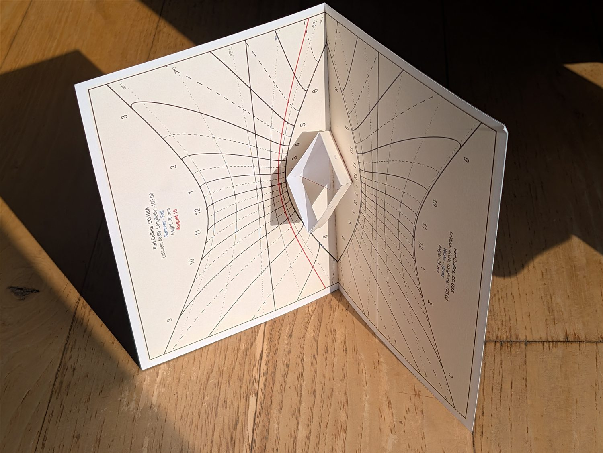
Two gnomon strategies now coexist: the folded triangle of the original pop-up (simple, self-evident, but a little floppy and reliant on a clean glue line), and the square tube of the dual dial (rigid, self-bracing, dual-purpose, but fiddlier to assemble).
When the two dial gnomons crowd close together — a low sun angle, or a hand-tuned gnomon height — their triangles are cropped at the crease so they still fit, and the net's tabs crop to match. When a full-size net will not fit the page, the app prints fewer copies rather than shrink them, because a scaled gnomon prints at the wrong physical height and quietly ruins the dial.
The tube is the current best compromise, but it is not obviously the last word. Is there a fold that self-erects from the crease with no glue at all — a true pop-up driven by opening the card? A slot-and-lock tab instead of adhesive? The ideal shadow needs one clean 90° corner at the known height; everything else is structure. Ideas are genuinely welcome.
Correct for your longitude within the time zone and for the equation of time using the date lines, and a well-printed paper dial will hold its own against far heavier instruments — then fold flat and slip back into a drawer.
Both cards are Letter-sized and fold in half to 5½ × 8½ in — the size of a standard half-fold greeting card. Avery Printable Half-Fold Greeting Cards (template 3265) are matte white, inkjet-ready, and come with matching envelopes, so the dial prints edge-to-edge, folds on stock made for it, and drops straight into the mail.